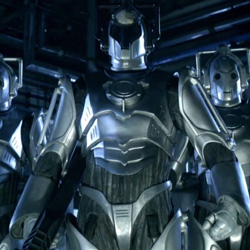

|
|
The CybermanThe Cybermen are a fictional race of cyborgs who are among the most persistent enemies of the Doctor in the British science fiction television programme, Doctor Who. All but the third, eighth, war and ninth incarnations of the Doctor faced them. Cybermen were originally a wholly organic species of humanoids originating on Earth's twin planet Mondas that began to implant more and more artificial parts into their bodies as a means of self-preservation. This led to the race becoming coldly logical and calculating, with every emotion deleted from their minds. They were created by Dr. Kit Pedler (the unofficial scientific advisor to the show) and Gerry Davis in 1966, first appearing in the serial The Tenth Planet, the last to feature William Hartnell as the First Doctor. They have since been featured numerous times in their extreme attempts to survive through conquest up until the show was cancelled. Following the revival of the show, the Cybermen returned as a parallel universe version and appeared in the 2006 series' two-part story, "Rise of the Cybermen" and "The Age of Steel", and have been recurring villains in the revived series since. A further redesign took place in the 2013 episode "Nightmare in Silver", showing technologically advanced Cybermen able to instantly upgrade themselves to fix flaws and weaknesses. The species also appeared in the Doctor Who spin-off Torchwood in its fourth episode, "Cyberwoman" (2006). Cybermen have also appeared in 2010 installments of the Doctor Who video game series The Adventure Games. |
|
Julia Schwartz Ann Marie Skjold |
Content derived from the Doctor Who Wikipedia |